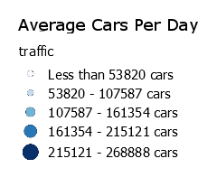

<!DOCTYPE html>
<html>
    
    <head>
    	<meta charset="utf-8" />
        <link rel="stylesheet" href="http://cdn.leafletjs.com/leaflet-0.7/leaflet.css" />
	<script src="http://cdn.leafletjs.com/leaflet-0.7/leaflet.js"></script>
        <link rel="stylesheet" type="text/css" href="own_style.css" />
        <link rel="stylesheet" type="text/css" href="js/MarkerCluster.Default.css" />
        <link rel="stylesheet" type="text/css" href="js/MarkerCluster.css" />
        
        
        <!--[if lte IE 8]>
            <link rel="stylesheet" type="text/css" href=" leaflet/leaflet.ie.css" />
        <![endif]-->
        
 <style>
            html, body, #map {
                height: 100%;
            }
            body {
                padding: 0;
                margin: 0;
            }
            .info {
			padding: 6px 8px;
			font: 14px/16px Arial, Helvetica, sans-serif;
			background: white;
			background: rgba(255,255,255,0.8);
			box-shadow: 0 0 15px rgba(0,0,0,0.2);
			border-radius: 5px;
		}
		.info h4 {
			margin: 0 0 5px;
			color: #777;
		}

		.legend {
			text-align: left;
			line-height: 18px;
			color: #555;
		}
		.legend i {
			width: 18px;
			height: 18px;
			float: left;
			margin-right: 8px;
			opacity: 0.7;
		}
            
        </style>
        <title>Traffic</title>
    </head>
    
    <body>
    	
    	<script src="js/leaflet.markercluster-src.js"></script>
    	<script src="js/leaflet.markercluster.js"></script>
    	<script src="data/traffic2.js"></script>
    	<script src="data/exp_traffic.js"></script>
  		
        <div id="map"></div>
        <script type="text/javascript">

            var map = L.map('map', {
                center: [39.7392, -104.9847],
                zoom: 10
            });
          
		
           
			
				function getColor(d) {
			return 
			       d > 268888   ? '#08306b' :
			       d > 215121    ? '#2878b8' :
			       d > 107587    ? '#72b2d7' :
			       d > 53820   ? '#c7dcef' :
			                  '#f7fbff';
		}

		osm = L.tileLayer('http://{s}.tile.openstreetmap.org/{z}/{x}/{y}.png', {
                attribution: '&copy; OpenStreetMap contributors'
            }).addTo(map);
        
            	var additional_attrib = 'created w. <a href="https://github.com/geolicious/qgis2leaf" target ="_blank">gis2leaf</a> by <a href="http://www.geolicious.de" target ="_blank">Geolicious</a> & contributors<br>';
	var feature_group = new L.featureGroup([]);
		function pop_traffic(feature, layer) {
				var popupContent = '<table><tr><th>attribute</th><th>value</th></tr><tr><td>LOCATION</td><td>' + feature.properties.LOCATION + '</td></tr><tr><td>AVG_VOLUME</td><td>' + feature.properties.AVG_VOLUME + '</td></tr></table>';
				layer.bindPopup(popupContent);
			}
					
	
 var markers = L.markerClusterGroup({ disableClusteringAtZoom : 13});
	var points_rand = L.geoJson(exp_traffic,{
		onEachFeature: pop_traffic,
				pointToLayer: function (feature, latlng) {  
					return L.circleMarker(latlng, {
						radius: feature.properties.diam,
						fillColor: feature.properties.color_qgis2leaf,
						color: '#000',
						weight: 1,
						opacity: feature.properties.transp_qgis2leaf,
						fillOpacity: feature.properties.transp_fill_qgis2leaf
						})
					}
				});

		
	markers.addLayer(points_rand); // add it to the cluster group
	map.addLayer(markers);	
	
	var legend = L.control({position: 'topright'});

legend.onAdd = function (map) {
        var div = L.DomUtil.create('div', 'info legend');

            div.innerHTML +=
            '';

        return div;
        };

		legend.addTo(map);


        </script>
    </body>

</html>